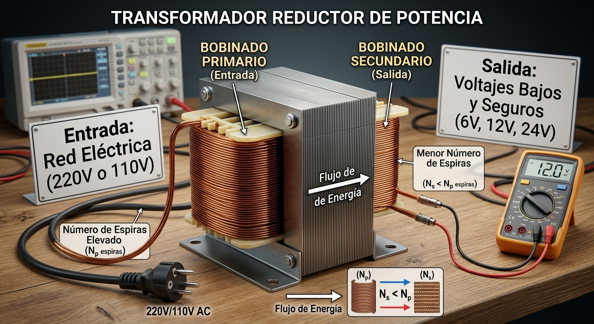
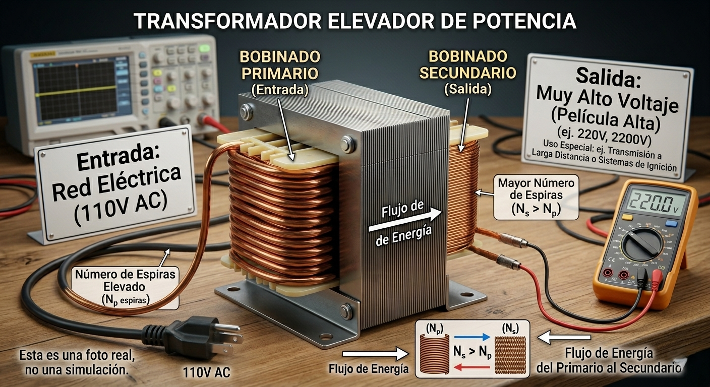
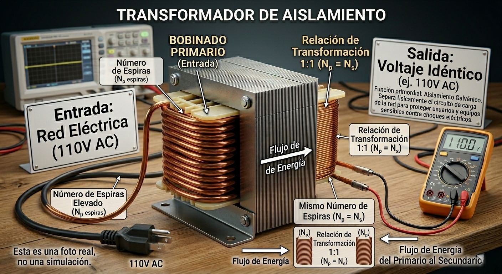

Teoría y Dinámica de los Transformadores
El transformador es una máquina eléctrica estática diseñada para transferir potencia de un circuito a otro con una frecuencia constante, permitiendo variar las magnitudes de voltaje y corriente. Su arquitectura fundamental consta de tres elementos críticos: el Devanado Primario, el Devanado Secundario y el Núcleo Magnético.
Su funcionamiento se rige por la Ley de Inducción de Faraday: cuando una corriente circula por el devanado primario, se genera un Flujo Magnético variable que es canalizado y concentrado por el núcleo (usualmente de chapas laminadas de acero al silicio para reducir pérdidas). Este flujo variable "corta" las espiras del devanado secundario, induciendo en él una fuerza electromotriz (voltaje) proporcional al número de vueltas.
Es imperativo subrayar que los transformadores solo funcionan con Corriente Alterna (CA). Esto se debe a que la inducción requiere un flujo magnético en constante cambio; una Corriente Continua (CC) produciría un flujo estático que no induciría voltaje en el secundario y, debido a la baja resistencia óhmica de los hilos, provocaría el sobrecalentamiento y la destrucción del componente (el dispositivo se quema).
La versatilidad de la relación de vueltas (a = N_p / N_s) permite clasificar a los transformadores según su función específica en el circuito:
Transformadores Reductores
Poseen un número de espiras en el secundario menor al del primario (N_s < N_p). Se utilizan para disminuir los altos voltajes de la red eléctrica (ej. 220V o 110V) a niveles bajos y seguros (6V, 12V, 24V) requeridos por la mayoría de los equipos electrónicos.

Transformadores Elevadores
Tienen más vueltas en el secundario que en el primario (N_s > N_p). Son esenciales en la transmisión de energía a largas distancias para elevar el voltaje y reducir las pérdidas por corriente, así como en equipos especiales como tubos de rayos catódicos o sistemas de ignición.

Transformadores de Aislamiento
Presentan una relación de transformación 1:1, lo que significa que el voltaje de entrada es idéntico al de salida. Su función primordial no es cambiar el voltaje, sino proporcionar aislamiento galvánico, separando físicamente el circuito de carga de la red para proteger a los usuarios y equipos sensibles contra choques eléctricos.

Diferencia de Núcleo
Explicacion del Diagrama Comparativo
Visualizacion de Ambos Nucleos:
IZQUIERDA - Nucleo Acorazado (Tipo E-I):
Representacion 3D isometrica de la clasica construccion E + I
Devanado visible sobre el brazo central
Lineas de flujo AMARILLAS: Muestran el camino principal dentro del nucleo
Lineas ROJAS discontinuas: Muestran las fugas magneticas en:Los entrehierros (union E-I)
Los extremos abiertos del nucleo
Zonas de dispersion alrededor del devanado
DERECHA - Nucleo Toroidal:
Representacion 3D del anillo continuo
Devanado distribuido uniformemente alrededor del nucleo
Linea de flujo AMARILLA circular: Confinada perfectamente dentro del material
Linea ROJA tenue (~15% opacidad): Las minimas fugas (practicamente despreciables)
Indicadores Clave:
Aspecto
Acorazado
Toroidal
Barra de eficiencia
72% (naranja)
98% (verde)
Fugas visibles
4 zonas marcadas
Practicamente ninguna
Color de evaluacion
Medio/Bajo
Excelente
Interacciones:
Toggle "Mostrar Lineas de Flujo": Activa/desactiva todas las visualizaciones de campo magnetico
Hover sobre cada nucleo: Muestra preview de las lineas incluso cuando estan ocultas
Tabla comparativa completa: 9 parametros tecnicos lado a lado
Concepto Central Demostrado:
La geometria continua del toroidal elimina los entrehierros que obligan al flujo a "saltar" de aire a hierro. En el nucleo E-I, cada union crea una zona de alta reluctancia donde parte del campo escapa. El toroidal, al ser una pieza unica sin interrupciones, mantiene el flujo "prisionero" dentro del material ferromagnetico con eficiencia superior al 95%.
Caso práctico
El Escenario: Un técnico de laboratorio debe diseñar una fuente de alimentación lineal básica. Para ello, necesita reducir el voltaje de la red doméstica (220V CA) a un nivel de 12V CA antes de pasar a la etapa de rectificación. Dispone de varios núcleos y carretes de alambre para construir el componente.
¿Qué tipo de transformador (según la relación de voltaje) debe construir el técnico?
Para lograr que el voltaje de salida sea menor al de entrada, ¿cuál de los dos devanados (primario o secundario) debe tener un mayor número de vueltas (espiras)?